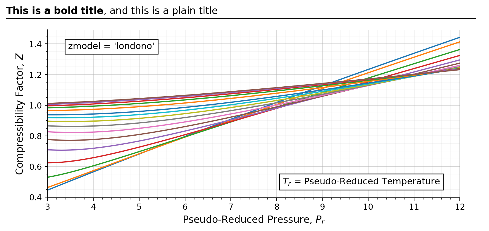
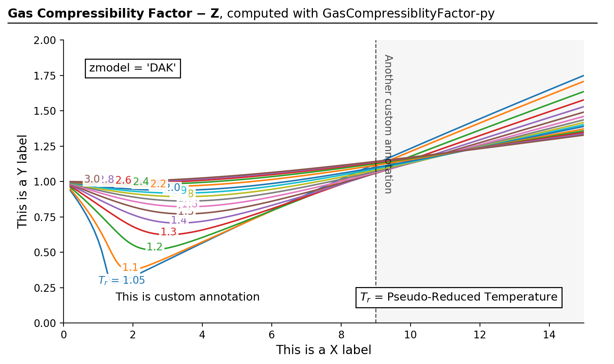

Quick plot generation tool for those who don’t wish to write a full-blown matplotlib script. It generates a
z-factor correlation plot against \(P_r\) and \(T_r\) ranges.
>>> result,fig,ax=gc.quickstart(... zmodel='londono',prmin=3,prmax=12,figsize=(8,4),... title_underline_loc=0.91,disable_tr_annotation=True,... title_bold='This is a bold title',title_plain='and this a plain',... )

Custimization using the returned matplotlib axis object
>>> result,fig,ax=gc.quickstart()>>>>>> ax.set_ylim(0,2)>>> ax.set_xlim(0,15)>>> ax.set_ylabel('This is a Y label')>>> ax.set_xlabel('This is a X label')>>> ax.grid(False)>>> ax.minorticks_off()>>> ax.text(0.1,0.08,'This is custom annotation',fontsize=11,... transform=ax.transAxes)>>> ax.axvspan(9,15,facecolor='#efefef',alpha=0.5)>>> ax.axvline(x=9,color='k',linestyle='--',linewidth=1,alpha=0.7)>>> ax.text(9.2,1.9,'Another custom annotation',fontsize=10,va='top',... color='k',alpha=0.7,rotation=270)>>>>>> fig.tight_layout()>>> # fig.savefig('output.png', bbox_inches='tight', dpi=200)

Extreme failure scenario whensmart_guess=Falseand badguessis provided - NOT RECOMMENDED.
Check Theories 2.6: Caveats for more information.
zmodel (str) – choice of a z-correlation model.
Check Theories 2: Z-Factor Correlation Models for more information.
Accepted inputs: 'DAK' | 'hall_yarborough' | 'londono'|'kareem'
prmin (float) – minimum value of the \(P_r\) range
prmax (float) – maximum value of the \(P_r\) range
figsize (tuple) – matplotlib figure size
title_bold (str) – string of the bold (left) portion of the figure title
title_plain (str) – string of the plain (right) portion of the figure title
title_underline_loc (float) – vertical location of the horizontal bar under the title. Try adjusting this value between 0.8 ~ 1.10 if the
title underline looks off
disable_tr_annotation (bool) – set this to True to not display \(T_r\) text annotations
kwargs (dict) – optional kwargs used py gascompressibility.calc_z.
Returns:
results (dict) – dictionary of the simulation result. The structure is as follows: